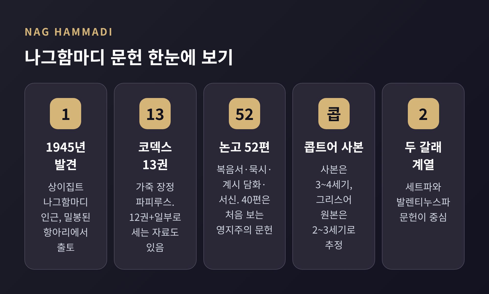
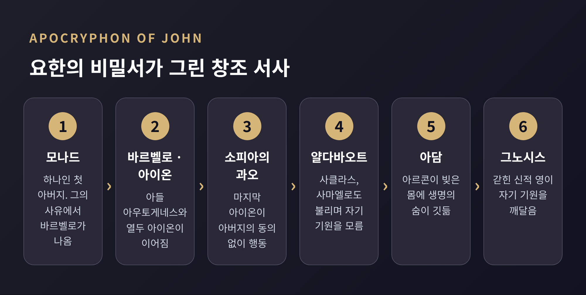
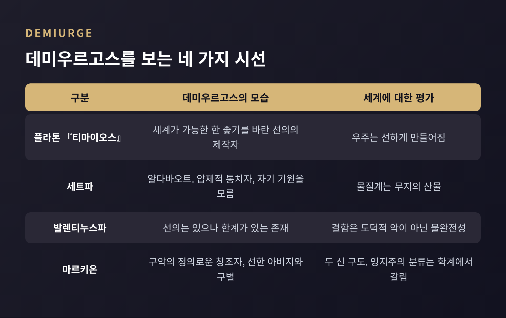
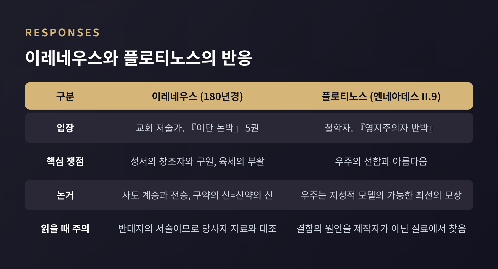

그노시스주의(영지주의) 입문: 나그함마디 문헌과 데미우르고스, 범주 논쟁

오늘은 그노시스주의, 흔히 영지주의라 부르는 고대 종교 현상을 비교종교학의 눈으로 정리해 보려 합니다.
1945년 이집트에서 발견된 나그함마디 문헌이 어떤 세계관을 보여주는지, 정통 교회와 철학자들은 어떻게 반응했는지, 그리고 오늘날 학계가 '그노시스주의'라는 이름 자체를 왜 다시 따져 묻는지를 차례로 다룹니다.
특정 신앙의 옳고 그름을 가리는 글이 아니라, 자료와 학계의 입장을 나란히 놓고 읽어 보는 교양 글입니다.
■ 항아리에서 나온 책 열세 권
1945년 말, 상이집트 나그함마디 인근에서 농부 형제들이 밀봉된 항아리 하나를 발견했습니다.
안에는 가죽으로 장정한 파피루스 코덱스가 들어 있었습니다. 모두 13권, 논고로는 52편입니다. 그중 40편은 학자들이 그전에 본 적 없는 영지주의 문헌이었다고 전합니다.
다만 세는 방식은 자료마다 조금 다릅니다. 열두 권에 열세 번째 코덱스의 일부 논고가 더해진 것으로 설명하는 자료도 있습니다. 발견 당시의 정황 역시 기록마다 세부가 엇갈려, 이 글에서는 확실히 겹치는 사실만 쓰겠습니다.
사본은 콥트어로 쓰였습니다. 사본 자체는 3~4세기의 것이고, 원본은 2~3세기의 그리스어 문헌을 옮긴 것으로 추정됩니다.
내용은 비밀 계시와 묵시, 복음서, 행전, 서신 등 다양합니다. 가장 유명한 것은 도마복음이고, 헤르메스 문서 세 편과 플라톤 『국가』의 일부를 고쳐 옮긴 대목도 섞여 있습니다.

이 발견이 왜 컸을까요. 예전엔 영지주의를 알려면 그들을 반박한 교부들의 글에 기대야 했습니다. 지금은 그들 자신의 문헌을 직접 읽을 수 있습니다.
1977년 제임스 로빈슨이 편집한 『The Nag Hammadi Library in English』가 나오면서 일반 독자에게도 길이 열렸습니다.
문헌이 어떻게 땅에 묻혔는지도 논쟁거리입니다.
로빈슨은 인근 파코미우스 계열 수도원의 수도사들이 아타나시오스의 367년 부활절 서한, 곧 비정경 서적을 경계한 편지 이후 책을 묻었을 것이라 보았습니다.
룬드하우그와 제노트는 한 걸음 더 나아가, 이 책들이 후기 고대 이집트 수도원 문화 안에서 만들어지고 읽혔다고 주장합니다. 반면 루이스와 블라운트는 부유한 비수도원 인물이 주문해 함께 묻혔을 가능성을 제시했습니다. 어느 쪽도 아직 정설은 아닙니다.
■ 구원은 '앎'으로 온다
그노시스(gnosis)는 그리스어로 '앎'입니다. 종교적 의미로는 신성에 직접 참여하며 얻는 신비적 지식을 뜻하고, 여러 체계에서 구원의 열쇠로 나타납니다.
도마복음의 첫머리가 이를 잘 보여줍니다. "이 말씀의 의미를 발견하는 이는 죽음을 맛보지 않을 것이다." 도마복음에서 예수는 속죄의 구원자라기보다 숨은 지식을 일러 주는 스승에 가깝고, 부활 이야기는 나오지 않습니다.
여기서 말하는 앎은 정보의 축적이 아닙니다. 나는 어디서 왔고 지금 어디에 있으며 어디로 돌아가는가를 깨닫는 자기 인식에 가깝습니다.
요한의 비밀서에서는 부활한 그리스도가 사도 요한에게 비밀을 계시하는 형식으로 이 앎이 전해집니다.
발렌티누스 학파는 이를 인간 삼분론으로 풀었습니다. 사람을 영적인 부류, 혼적인 부류, 물질적인 부류로 나눕니다. 영적인 이만 그노시스를 통해 신적 충만(플레로마)으로 돌아가고, 혼적인 이의 구원은 제한적이거나 불확실하며, 물질적인 이는 멸망할 운명으로 보았다고 전합니다.
이 구분은 훗날 비판의 표적이 됩니다. 이레네우스는 이것을 '영적인 자에게는 선한 행위가 필요 없다는 주장'으로 소개했습니다.
그런데 윤리를 다룬 자료를 보면 그림이 단순하지 않습니다. 영지주의 쪽 자료에는 성이나 음식에서 오히려 금욕 경향이 나타난다는 설명이 있고, 발렌티누스파 프톨레마이오스의 『플로라에게 보낸 편지』는 참된 영적 금식을 모든 악을 삼가는 일로 풀이합니다. 반대자의 보고와 당사자의 글이 어긋나는 대목입니다.
■ 서툰 신이 만든 세계: 데미우르고스와 이원론
데미우르고스는 그리스어 '데미우르고스', 곧 장인에서 온 말입니다. 플라톤의 『티마이오스』(기원전 360년경)에서는 세계가 가능한 한 좋기를 바란 선의의 제작자였습니다.
영지주의 문헌에서는 이 이름의 결이 달라집니다. 대체로 물질계를 다스리는 열등한 신으로 그려집니다.
요한의 비밀서의 줄거리를 따라가 보겠습니다.
태초에 모나드, 곧 하나인 아버지가 있습니다. 그의 사유에서 여성적 존재 바르벨로가 나오고, 다시 아들 아우토게네스(자생자)와 열두 아이온이 이어집니다.
마지막 아이온인 소피아가 아버지의 동의 없이 행동해 얄다바오트를 낳습니다.
얄다바오트는 사클라스('어리석은 자'), 사마엘('눈먼 신')으로도 불리며 "나는 신이다, 나 외에 다른 신은 없다"고 선언하지만, 정작 자기 기원을 알지 못합니다.

얄다바오트와 아르콘들이 인간을 빚지만, 그 몸은 생명이 없었습니다. 소피아의 계책으로 생명의 숨이 불어넣어지면서 신적인 영이 인간 안에 깃듭니다. 아르콘들은 격분해 아담을 물질계의 가장 낮은 곳에 던집니다.
금지된 나무의 열매를 먹은 아담과 여자는 이 이야기에서 그노시스를 얻습니다. 낙원의 금지는 인간의 앎을 막으려는 질투로 읽히는 셈입니다.
세계는 악의 산물이라기보다 무지의 산물이고, 인간은 그 안에 갇힌 신적 불꽃입니다. 이것이 흔히 말하는 이원론입니다.
여기서 조심할 점이 있습니다. 이원론의 강도는 문헌마다 다릅니다.
스탠퍼드 철학 백과의 플로티노스 항목은 영지주의 견해를 '극단적으로 이원론적이고 반우주적'이라고 묘사합니다. 한편 발렌티누스 체계는 세계의 결함을 도덕적 악이 아니라 데미우르고스의 불완전성에서 찾기 때문에 일원론적이라는 평가도 있습니다.
세트파는 데미우르고스를 억압적 통치자로 보았고, 발렌티누스파는 선의는 있으나 한계가 있는 존재로 보았다고 전합니다.

마르키온은 이 지점에서 자주 함께 언급됩니다.
그는 『대립명제』에서 구약의 정의로운 창조자와 신약의 선한 아버지를 대비했고, 누가복음 단축본과 바울 서신 열 통으로 최초의 신약 정경을 제안했습니다. 144년경 로마 교회에서 파문되었으며, 그의 정경이 교회의 정경 형성을 재촉했다는 평가가 있습니다.
그를 영지주의자로 분류할 것인가에 학계 의견은 갈립니다. 바트 어만은 신이 둘뿐이고, 세계를 우주적 재앙으로 보지 않았으며, 신적 불꽃의 해방을 가르치지 않았다는 이유로 영지주의자로 보지 않습니다.
■ 교회와 철학자는 어떻게 답했나
가장 체계적인 반응은 이레네우스의 『이단 논박』입니다. 그리스어 제목은 '거짓 이름의 그노시스에 대한 논박과 전복'이고, 180년경에 쓰였다고 봅니다.
전체 5권 가운데 1권은 발렌티누스파를 비롯한 여러 집단을 서술하고, 2권은 철학적으로 반박합니다. 3권은 사도 계승과 전승을 내세우고, 4권은 구약의 신이 곧 신약의 신임을 논증하며, 5권은 육체의 부활을 변호합니다.
그리스어 원문은 단편만 남았고, 4~5세기경 라틴어 번역이 거의 온전히 전합니다.
중요한 사실이 하나 있습니다. 이레네우스는 반대자였습니다. 그의 서술은 처음부터 논박이라는 목적을 띠고 있으므로, 당사자의 자료와 맞대어 읽어야 합니다. 테르툴리아누스 역시 『마르키온 반박』을 썼고, 발렌티누스 체계가 여러 갈래로 나뉘었다고 증언합니다.
철학자의 반응은 결이 다릅니다. 플로티노스는 『영지주의자 반박』(엔네아데스 II.9)에서 감각 세계를 '어리석거나 악의적인 창조자'의 작품으로 보는 견해와, 영혼이 이 세계에 추방되어 있다는 관념을 비판했습니다.
그가 내세운 것은 지각 세계의 선함과 아름다움입니다. 그에게 우주는 지성적 모델의 가능한 한 훌륭한 모상이고, 결함은 제작자가 아니라 질료에서 옵니다.

흥미롭게도 두 비판은 서로 다른 곳을 겨눕니다. 교회 쪽은 성서의 창조자와 구원의 관계를, 철학자 쪽은 우주의 가치를 문제 삼았습니다.
■ '그노시스주의'라는 이름을 의심하다
여기까지 읽으셨다면 의문이 들 수 있습니다. 이렇게 서로 다른 문헌들을 하나의 이름으로 묶어도 되는가 하는 물음입니다. 학계가 정확히 이 질문을 던지고 있습니다.
'그노시스주의'라는 말은 17세기 영국 철학자 헨리 모어가 처음 쓴 근대 학술 용어입니다. 고대에 그리스어 gnostikos는 '학식 있는'이라는 뜻이었고, 이레네우스는 발렌티누스 학파를 가리켜 이 말을 썼습니다.
이 쟁점을 대표하는 두 권의 책이 있습니다.
첫째, 마이클 앨런 윌리엄스의 『Rethinking "Gnosticism"』(1996)입니다. 워싱턴대 비교종교학 교수인 그는 이 범주가 고대 자료의 자기 서술에 근거하지 않으며, 후기 고대의 단일한 반항 운동이 있었다는 오해를 낳는다고 주장했습니다. 이레네우스가 '그노스틱'이라 부른 집단 대부분은 대개 지도자 이름으로 불렸고 스스로 그렇게 부르지 않았다는 점도 짚습니다. 대안으로는 '성서적 데미우르고스 전통'이라는 이름을 제안했습니다.
둘째, 캐런 L. 킹의 『What Is Gnosticism?』(2003)입니다. 킹은 이 범주를 정통과 이단을 가르던 초기 교부들의 논쟁에서 나와 독립된 실체처럼 굳어진 '물화'로 봅니다. 교부들이 차이를 과장하고 유사성을 줄였고, 하르낙 같은 근대 학자들이 이를 알게 모르게 되풀이했다는 것입니다. 한스 요나스의 일곱 가지 특성 같은 유형론적 정의도 검토 대상에 올렸습니다.
물론 이 비판에도 비판이 있습니다. 서평자 니콜라 덴지는 킹의 책이 역사적으로 상세하지만 대안 제시가 부족하고, 이런 방법론은 전문가 사이에서 이미 자리 잡았다고 지적했습니다.
데이비드 브라키는 범주에 개선이 필요하다고 보면서도 영지주의자를 단순한 이단이 아니라 '그리스도교의 지속적 재발명'에 참여한 사람들로 읽자고 제안합니다. 1990년대 이후 많은 학자가 통일 범주로서의 효용을 의심하고 더 정밀한 분류를 선호한다는 정리가 일반적입니다.
기원에 대해서도 합의는 없습니다. 유대교 신비주의에서 찾는 견해(숄렘, 퀴스펠), 그리스도교 내부에서 나왔다는 견해(브라키 등), 중기 플라톤주의의 영향을 강조하는 견해, 이란 기원설, 소수의 불교 기원설까지 병존합니다.
세트파만 해도 별개의 운동이 아니라 여러 문헌에 걸친 신화 주제의 묶음일 수 있다는 견해(반 덴 브룩)가 있고, 영국·프랑스 학계는 이단적 그리스도교 사변으로, 독일·미국 학계는 유대교 내부의 혼합주의 현상으로 보는 경향이 있다고 합니다.
도마복음의 분류도 같은 문제를 보여줍니다. 레이턴과 어만은 영지주의로 분류하지만, 소피아의 타락이나 악한 데미우르고스 같은 완전한 신화가 없다는 이유로 패터슨 브라운은 그렇지 않다고 봅니다. 연대도 1세기 말까지 올리는 견해부터 2세기 중반으로 보는 견해까지 갈립니다. 정경 복음서와 겹치는 어록이 약 3분의 2이고, 대부분의 학자는 공관복음에 의존했거나 조화시켰다고 보지만 독립적이라는 견해도 있습니다.
이 이름의 마지막 증인으로 만다이교가 있습니다. '앎'을 뜻하는 아람어 '만다'에서 이름을 딴 이 공동체는 요한 세례자를 가장 위대한 스승으로 모시며, 영지주의적 성격을 지닌 종교로서 지금도 남아 있습니다. 전 세계에 6만~7만 명 정도로 추정되며, 2003년 이후 이라크의 공동체가 크게 줄었습니다. 다만 이 수치는 추정치입니다.
■ 읽는 방법에 대하여
정리하면 이렇습니다.
나그함마디 문헌은 초기 그리스도교 세계가 훨씬 다양했음을 보여주는 1차 자료입니다. 엘레인 페이절스의 『영지주의 복음서』(1979)가 대중에게 이 점을 알렸고, 예전엔 '이단 목록'으로 읽히던 것이 지금은 '다양성의 증거'로도 읽힙니다.
그러나 그 다양성을 하나의 이름 아래 다시 묶을 수 있느냐는 여전히 열린 질문입니다. 문헌을 처음 접하신다면, 이름표보다 개별 문헌이 무엇을 말하는지부터 읽어 보시길 권합니다.
이 글은 어느 믿음이 옳은지를 판정하지 않았습니다. 자료가 말하는 것과 학자들이 논쟁하는 것을 구분해 보여드리려 했을 뿐입니다.
끝으로 한 가지만 덧붙이겠습니다.
"이름을 붙이는 일은 이해의 시작이자, 때로는 이해를 가로막는 일이기도 하다."
그노시스주의를 둘러싼 학계의 논쟁이 남기는 교훈은 어쩌면 이 정도일 것입니다. 이름을 잠시 내려놓고 문헌 앞에 앉아 본다면, 그 오래된 목소리는 생각보다 가까이에서 들릴지 모릅니다.